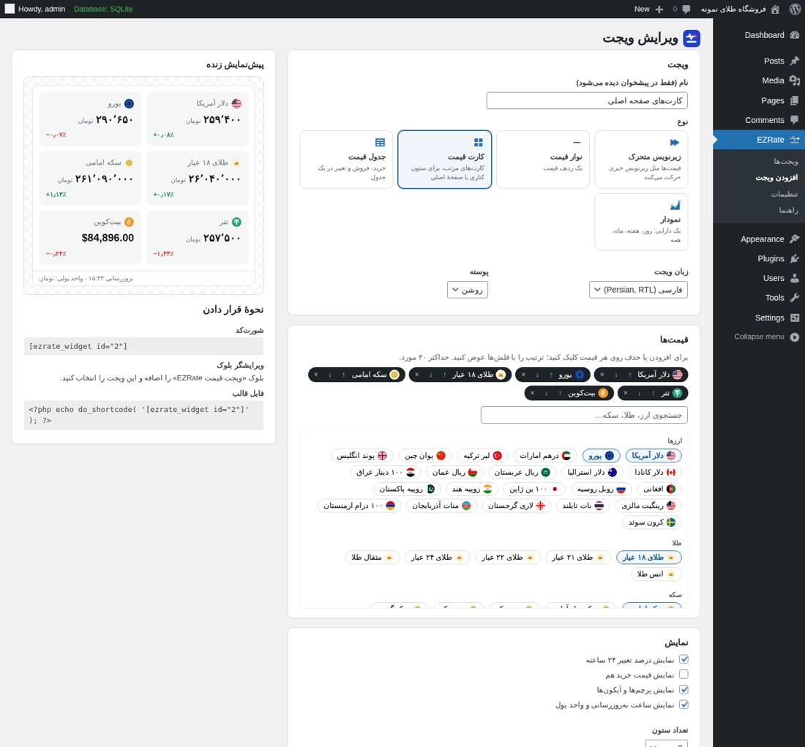
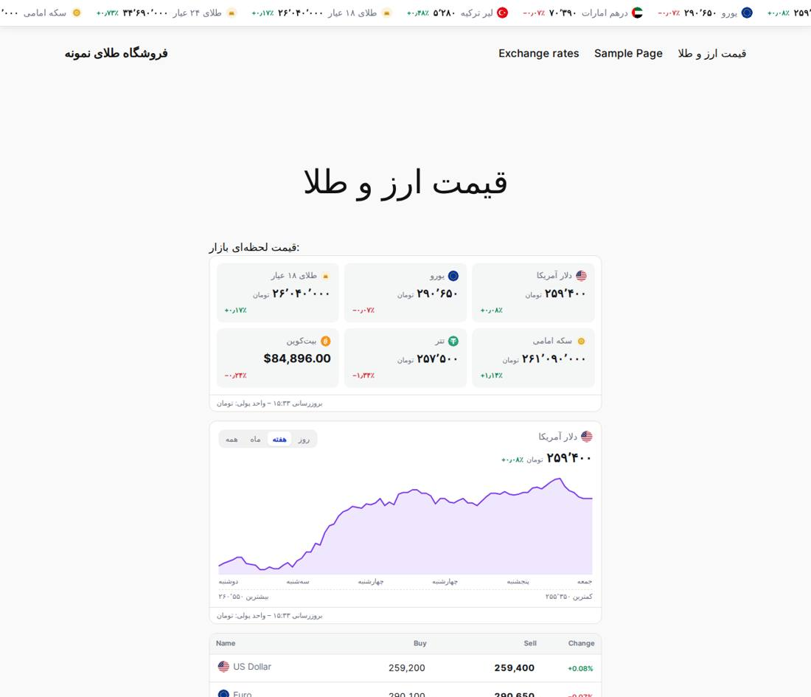
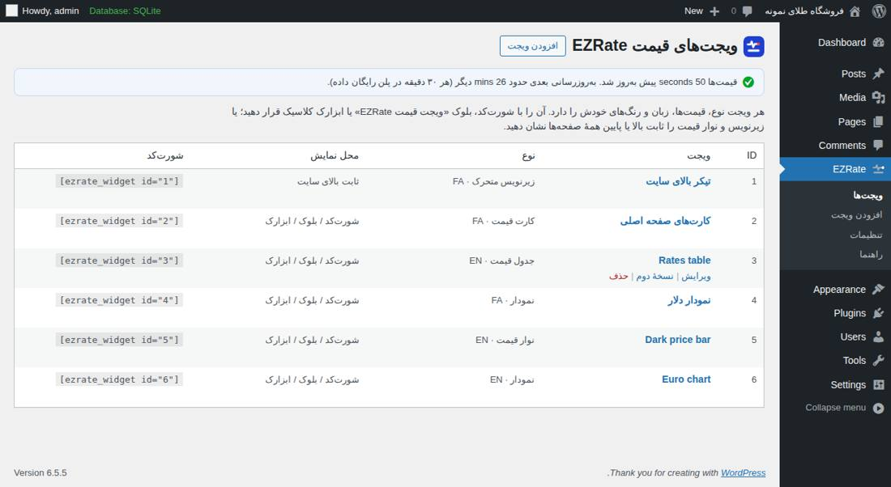
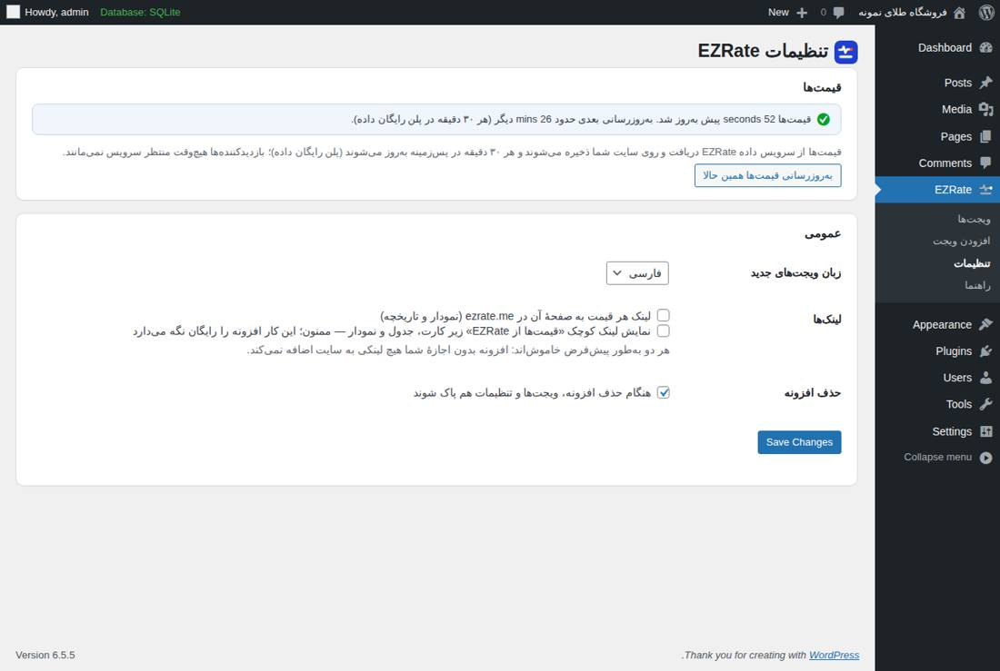
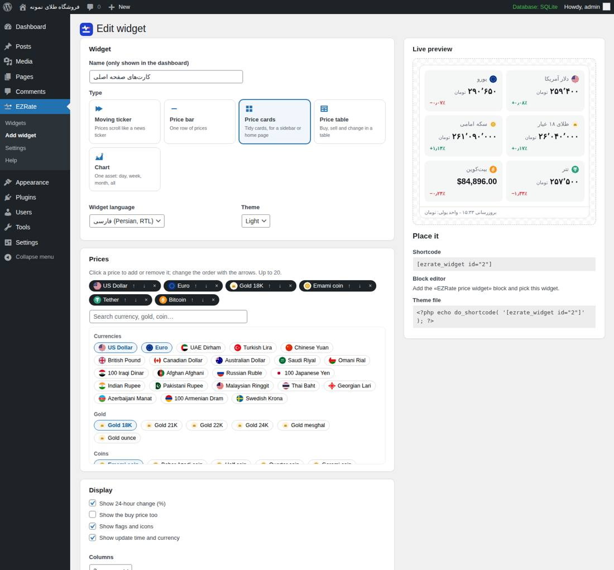
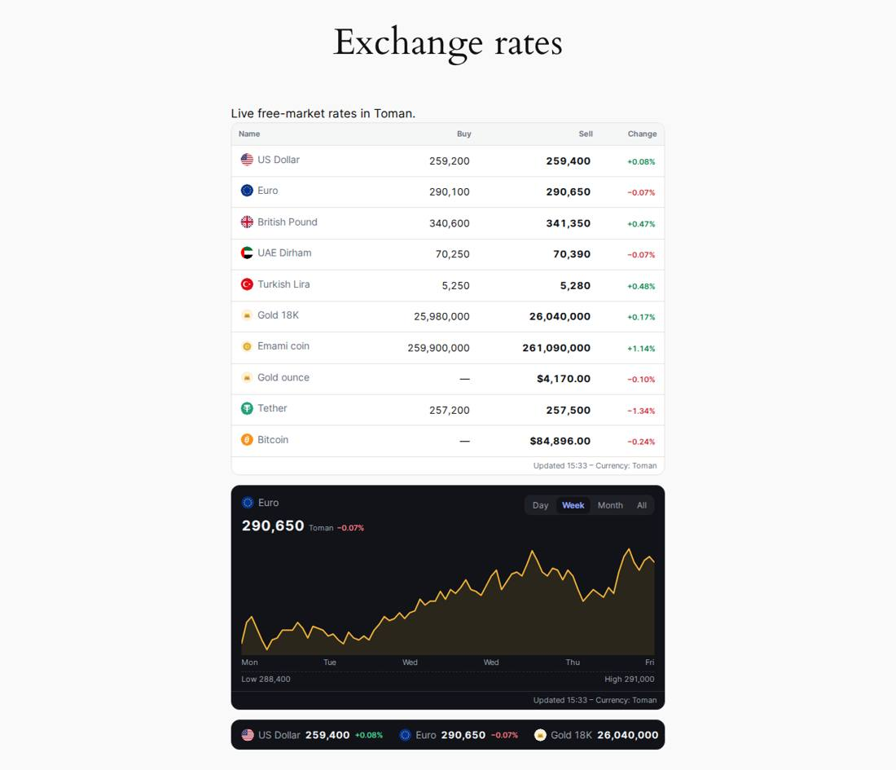
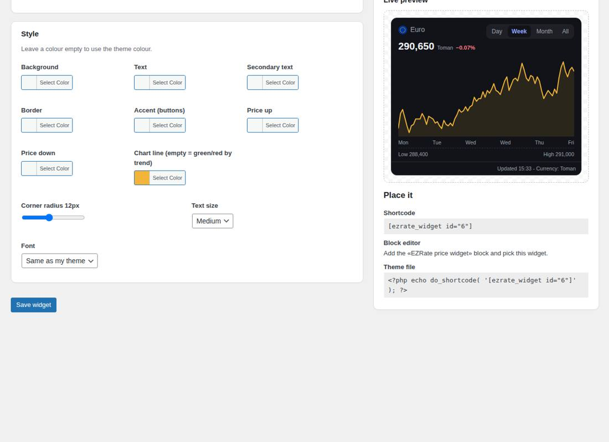
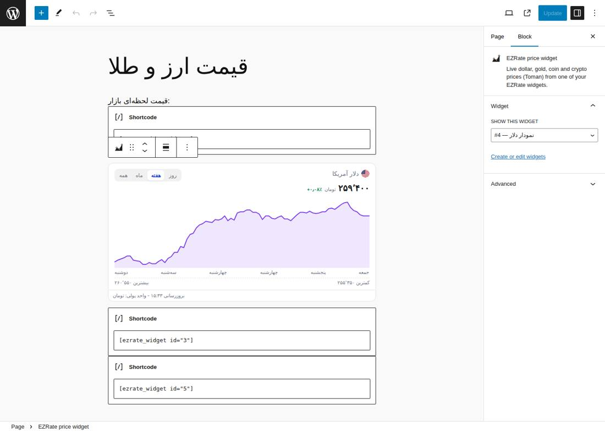
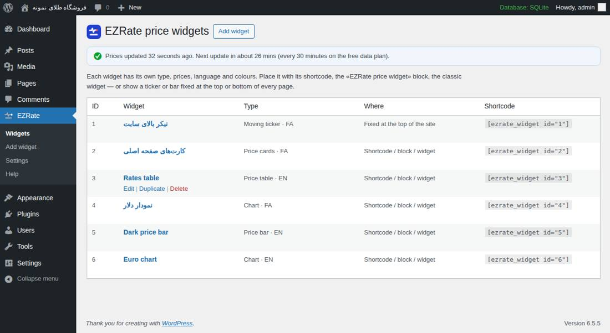
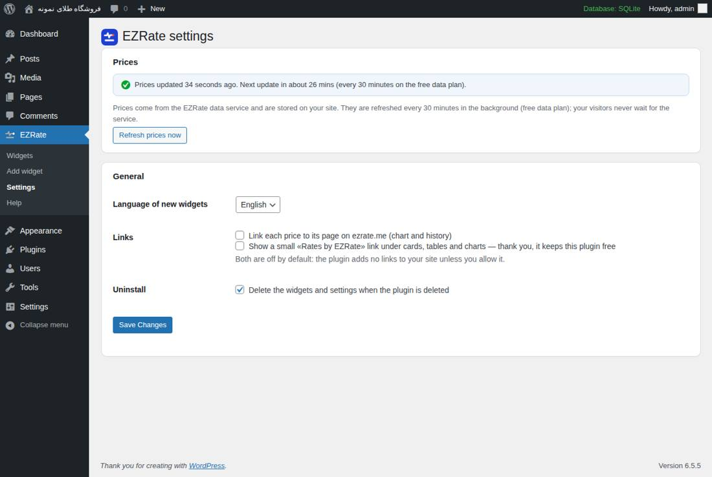

۱نصب و فعالسازی
- در پیشخوان وردپرس به افزونهها › افزودن بروید و «EZRate» را جستجو کنید؛ یا فایل zip افزونه را از بارگذاری افزونه نصب کنید.
- روی فعالسازی بزنید. منوی EZRate در ستون کناری پیشخوان اضافه میشود.
- یک ویجت «زیرنویس قیمت» آماده ساخته شده و قیمتها در چند ثانیه دریافت میشوند. نیازی به ثبتنام، کلید API یا کد نیست.
۲ساخت اولین ویجت
از EZRate › افزودن ویجت (یا ویرایش ویجت آماده) شروع کنید. صفحه دو بخش دارد: تنظیمات در سمت راست و پیشنمایش زنده در سمت چپ که با هر تغییر فوراً عوض میشود.

بعد از ساخت ویجت، شورتکد آن (مثل [ezrate_widget id="2"]) زیر پیشنمایش نمایش داده میشود؛ با یک کلیک کپی میشود.
۳انواع ویجت

۴انتخاب قیمتها و ترتیب
- در بخش قیمتها روی هر ارز، طلا، سکه یا ارز دیجیتال کلیک کنید تا اضافه شود (دوباره کلیک = حذف). حداکثر ۲۰ قیمت.
- ترتیب را با فلشهای ↑ ↓ کنار هر مورد عوض کنید؛ × حذف میکند.
- کادر جستجو با نام فارسی، انگلیسی یا کد (USD، G18…) کار میکند.
- برای نمودار، دارایی و بازهٔ پیشفرض را انتخاب کنید؛ بازدیدکننده میتواند بازه را عوض کند.
۵نمایش و محل قرارگیری
- زبان ویجت: فارسی (راستبهچپ با اعداد فارسی) یا انگلیسی؛ مستقل از زبان سایت.
- پوسته: روشن یا تیره.
- نمایش درصد تغییر ۲۴ ساعته، قیمت خرید، پرچم و آیکون، ساعت بهروزرسانی و واحد پول.
- سرعت زیرنویس (ثانیه برای هر دور) و تعداد ستون کارتها.
- برای زیرنویس و نوار قیمت، محل نمایش: جایی که شورتکد/بلوک را میگذارید، یا ثابت بالا / پایین همهٔ صفحهها؛ با گزینهٔ «فقط صفحهٔ اصلی» و «در گوشی نمایش داده نشود».
۶رنگ و ظاهر
در بخش ظاهر رنگ پسزمینه، متن، متن کمرنگ، حاشیه، رنگ اصلی (دکمهها)، افزایش و کاهش قیمت و خط نمودار را تعیین کنید. رنگی که خالی بماند از پوستهٔ روشن/تیره گرفته میشود. خط نمودار خالی = سبز یا قرمز بر اساس روند.
گردی گوشهها (۰ تا ۲۸ پیکسل)، اندازهٔ متن (کوچک، متوسط، بزرگ) و فونت (همان فونت قالب یا فونت سیستم) هم قابل تنظیم است.
۷قرار دادن در سایت
شورتکد
شورتکد را در نوشته، برگه، ابزارک «متن» یا صفحهسازها (المنتور، WPBakery…) بگذارید:
[ezrate_widget id="2"]
بلوک گوتنبرگ
در ویرایشگر بلوک، بلوک «ویجت قیمت EZRate» را اضافه و از ستون تنظیمات ویجت موردنظر را انتخاب کنید؛ پیشنمایش همانجا دیده میشود.
ابزارک کلاسیک
در قالبهای کلاسیک: نمایش › ابزارکها › «ویجت قیمت EZRate» را به ستون کناری اضافه و ویجت را انتخاب کنید.
فایل قالب
<?php echo do_shortcode( '[ezrate_widget id="2"]' ); ?>
ثابت بالا یا پایین سایت
برای زیرنویس و نوار قیمت، «ثابت بالای همهٔ صفحهها» یا «ثابت پایین» را انتخاب کنید؛ نیازی به شورتکد نیست. فاصلهٔ لازم به بدنهٔ سایت اضافه میشود تا محتوا زیر نوار نرود.

۸شورتکد سریع (بدون ساخت ویجت)
میتوانید تنظیمات را مستقیم در شورتکد بنویسید؛ یا تنظیمات یک ویجت ذخیرهشده را با id تغییر دهید:
[ezrate_widget type="cards" assets="usd,eur,g18,emami" lang="fa" theme="dark"] [ezrate_widget id="2" theme="dark" columns="2"] [ezrate_widget type="chart" chart_asset="g18" range="1m"]
| ویژگی | مقدار |
|---|---|
type | ticker، bar، cards، table، chart |
assets | کد قیمتها با کاما: usd,eur,aed,try,gbp,g18,g24,emami,nim,ounce,usdt,btc … |
chart_asset / range | دارایی نمودار و بازه: 1d، 7d، 1m، all |
lang / theme | fa یا en / light یا dark |
columns / speed | ستون کارتها (۰ = خودکار) / ثانیهٔ هر دور زیرنویس |
۹تنظیمات و بهروزرسانی قیمتها

- وضعیت قیمتها: زمان آخرین دریافت و بهروزرسانی بعدی. قیمتها هر ۳۰ دقیقه (پلن رایگان داده) بهروز میشوند.
- بهروزرسانی همین حالا: دریافت دستی (حداکثر هر ۵ دقیقه یک بار).
- زبان ویجتهای جدید.
- لینکها: لینک هر قیمت به صفحهٔ آن در ezrate.me و لینک کوچک «قیمتها از EZRate». هر دو بهطور پیشفرض خاموشاند؛ اگر روشن کنید از ما حمایت کردهاید. 🙏
- حذف افزونه: اگر تیک خورده باشد، با حذف افزونه ویجتها و تنظیمات هم پاک میشوند.
۱۰سؤالات و رفع اشکال
قیمتها نمایش داده نمیشوند
EZRate › تنظیمات را باز کنید: اگر خطا نوشته شده، سرور سایت باید به https://api.ezrate.me دسترسی HTTPS داشته باشد (فایروال هاست را بررسی کنید). سپس «بهروزرسانی همین حالا» را بزنید. تا وقتی ارتباط برقرار نشود، آخرین قیمتهای ذخیرهشده نمایش داده میشوند.
با افزونههای کش سازگار است؟
بله. صفحهٔ کششده قیمت لحظهٔ ساخت کش را نشان میدهد؛ مدت کش صفحهها را ۳۰ دقیقه یا کمتر بگذارید.
کرون وردپرس غیرفعال است
اگر DISABLE_WP_CRON فعال است، کرون سرور باید wp-cron.php را اجرا کند؛ در غیر این صورت قیمتها با اولین بازدید بعد از انقضا بهروز میشوند.
حریم خصوصی
هیچ اطلاعاتی از بازدیدکنندهها ارسال نمیشود. فقط سرور سایت شما هر ۳۰ دقیقه قیمتها را دریافت میکند؛ آیکون پرچمها از ezrate.me بارگذاری میشود (قابل خاموش کردن در هر ویجت).
1Install and activate
- In your dashboard go to Plugins › Add New and search for "EZRate", or upload the plugin zip with Upload Plugin.
- Click Activate. An EZRate menu appears in the dashboard sidebar.
- A "Price ticker" widget is created for you and the prices are downloaded within seconds. No account, API key or code needed.
2Your first widget
Start from EZRate › Add widget (or edit the ready-made one). The settings are on the left and the live preview on the right; it updates with every change.

After Create widget, its shortcode (e.g. [ezrate_widget id="2"]) is shown under the preview; click to copy it.
3Widget types

4Choosing prices and order
- In Prices, click any currency, gold, coin or crypto to add it (click again to remove). Up to 20.
- Change the order with the ↑ ↓ arrows; × removes it.
- Search works with English or Persian names and codes (USD, G18…).
- For a chart, pick the asset and the default range; visitors can switch ranges.
5Display and position
- Widget language: Persian (right-to-left, Persian digits) or English — independent of the site language.
- Theme: light or dark.
- Show or hide the 24-hour change, the buy price, flags and icons, the update time and currency.
- Ticker speed (seconds per loop) and the number of card columns.
- For tickers and price bars, Where: where you place the shortcode / block, or fixed at the top / bottom of every page — optionally on the home page only and hidden on phones.
6Colours and style
In Style, set the background, text, secondary text, border, accent (buttons), price up / down and chart line colours. Empty colours come from the light / dark theme; an empty chart line is green or red by trend.

Also: corner radius (0–28 px), text size (small, medium, large) and font (your theme's or the system font).
7Placing a widget
Shortcode
Paste the shortcode into a post, page, a "Text" widget or a page builder (Elementor, WPBakery…):
[ezrate_widget id="2"]
Block editor
Add the "EZRate price widget" block and choose the widget in the block settings; the preview shows right in the editor.

Classic widget
In classic themes: Appearance › Widgets › add "EZRate price widget" to a sidebar and pick the widget.
Theme file
<?php echo do_shortcode( '[ezrate_widget id="2"]' ); ?>
Fixed at the top or bottom
For tickers and bars, choose "Fixed at the top of every page" or "…bottom"; no shortcode needed. The page gets the padding it needs so nothing is hidden under the bar.

8Quick shortcode (no saved widget)
Write the options in the shortcode, or override a saved widget by id:
[ezrate_widget type="cards" assets="usd,eur,g18,emami" lang="en" theme="dark"] [ezrate_widget id="2" theme="dark" columns="2"] [ezrate_widget type="chart" chart_asset="g18" range="1m"]
| Attribute | Values |
|---|---|
type | ticker, bar, cards, table, chart |
assets | comma-separated codes: usd,eur,aed,try,gbp,g18,g24,emami,nim,ounce,usdt,btc … |
chart_asset / range | chart asset and range: 1d, 7d, 1m, all |
lang / theme | fa or en / light or dark |
columns / speed | card columns (0 = automatic) / seconds per ticker loop |
9Settings and price updates

- Price status: time of the last download and of the next one. Prices refresh every 30 minutes (free data plan).
- Refresh prices now: manual download (at most every 5 minutes).
- Language of new widgets.
- Links: link each price to its ezrate.me page, and a small "Rates by EZRate" credit. Both are off by default; turning them on supports the plugin. 🙏
- Uninstall: when ticked, deleting the plugin also deletes the widgets and settings.
10FAQ and troubleshooting
No prices are shown
Open EZRate › Settings. If an error is shown, your server needs HTTPS access to https://api.ezrate.me (check the host's firewall). Then click "Refresh prices now". Until the connection works, the last saved prices are shown.
Page caching plugins
They work. A cached page shows the prices of the moment it was cached; keep the page cache lifetime at 30 minutes or less.
WP-Cron is disabled
With DISABLE_WP_CRON, a server cron job must call wp-cron.php; otherwise prices refresh on the first visit after they expire.
Privacy
Nothing about your visitors is sent. Only your server downloads the prices every 30 minutes; the flag icons load from ezrate.me (can be turned off per widget).